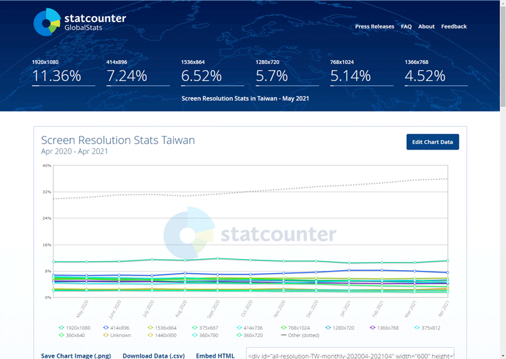

菜單．layout

03-05 fluid layout
版面:
使用 full width 設計版型。
欄寬:
fluid layout 以百分比(%)設定資料欄位寬度。
元素:
使用 Heading 標籤 <h1> <h2> <h3> 表示內容層級。
筆記
iii
網站(WebSite) 像房屋一樣，有骨架(HTML)、水電系統(JavaScript)基礎，再加上好的裝潢(CSS)設計，提升你的生活品質。
1-2
切版(Slicing) (平面的)網頁設計(.psd)轉換成實體網頁(.html)的專業術語。
1-3
CSS與設計 csszengarden.com(樣式表禪意花園;CSS設計之美)網站，推廣平面設計師學習CSS，其理念:「在不改動HTML情況下，更換CSS就更換一種設計風格」。 實作應用在社群網站的模板(theme)功能上。
1-5
格狀系統 精於設計的工程師設計出最早的格狀系統(960.gs)，按照格狀的寬度和比例去設計內容，降低了網頁設計門檻。
1-6
響應式網頁設計(Responsive Web Design) 簡稱RWD，與「不變動 HTML (csszengarden.com)」概念相反，RWD的HTML、CSS在不同的(螢幕)寬度或裝置下，都會有可能改變與移動。
1-7
UI kit (UI框架)提供介面設計師一套涵蓋按鈕、區塊、提示、訊息區塊等等的元素(元件)，可快速生產介面(頁面)。
1-8
Admin Dashboard UI (後台UI框架)提供前端工程師一套後台管理系統的UI框架。
2
網站規劃 網站規劃人員與委託者討論網站目的想法後，會將討論結果編寫成網站地圖(sitemap)。
網站目的 讓使用者逗留最久、提升轉換率關鍵的頁面(大多數是產品詳細頁面 或 一篇文章的全文)。
單篇文章(頁面) 怎樣的設計能夠自由(有彈性)的增/減內容物(極長篇、短篇)? 可以有一種/多種元件組合。
文章(頁面)差異性 避免使用相近的分類名稱。組別不同的頁面在設計上的風格、樣式仍維持一致的，只利用小元素來區分(圖片、標題…)不同頁面所屬的分類是什麼。
網站地圖(sitemap) (視覺化網站的內容結構)是網站的資料結構(結構也可能反映在網址上)。詳細的網站地圖，顯示出站內頁面連結關係，連結越多的權重越高(搜尋引擎會考量進去)。
sitelinks(網站連結) 搜尋結果下面的其它連結項目，這些連結由搜尋引擎決定(站內連結權重高的出現)，另外可透過google網站管理員工具來過濾和降低不要的連結排名。(資料結構做好很重要!!網站地圖做好很重要!!)
線框稿(Wireframe) 主要用來與設計師與工程師溝通網站的主要功能、資料結構、資訊呈現方式—>(內容導向設計方法)整體設計概念有了初步想法—>確認版型結構—>衍生其它頁面(畫面草稿)。
storyboard(故事板、分鏡) 將頁面(畫面草稿)之間(關係)流程製作出來。每個環節都關係網站要設計什麼、如何設計、資料如何流動等等。網站 storyboard 必須注意每個頁面都要保有高度的連接性。(Web和App的storyboard最大不同是:Web使用者不一定從首頁進入，可能從別的頁面進入，再進到另外的頁面。而App多數下從首頁進入)
補充
- Photoshop 網頁切版 - 大妞ofCourse
（平面切版）
- photoshop基礎教學 #6 快速網頁切版與判斷切圖 … - 謝感覺
（層次切版）
- CSS Zen Garden: The Beauty of CSS Design - Dave Shea
（目前共有001~221個作品）
- 網頁設計常用格線系統(上) - 卡斯伯
- 先設計介面還是UI Kit? - Manta Wu
- Dashboard Design 必讀的六篇文章 - YUFANG CHIU
- AdminHero - Admin Dashboard Template - ThusBox
（Admin Dashboard UI Kit）
- SEO排名第１名還不夠，爭取Sitelinks(網站連結)還能提升更多流量 - awoo Intelligence 阿物科技
- 更適合 UI 設計師製作的頁面流程圖 — Wireflow - 林育正 Riven
- Storyboard. 早期的 Web 開發(可能 10多年前?)、在沒有 MVC… - Fire Shieh
- 網頁設計工作流程 - DOMO MEMO
（storyboard）
3-6
開發人員工具(F12) 開發人員工具，查看<body>樣式:
(1) 瀏覽器預設樣式 (2) normalize.css清除預設樣式 (3) 自訂樣式
版型結構 主要有四種:
(1) Fixed width layout: 固定寬度版型
(2) Fluid width layout: 浮動寬度版型
(3) Adaptive page layout: 自適應版型（AWD）
(4) Responsive page layout: 響應式版型（RWD）
3-16
full width 版型 (似)全螢幕寬效果。新增內容方式是:直接增加一個區塊元素(內容)放置網頁中並置中對齊（藉由背景和內容寬度差異而製造出豐富的層次感）
boxed 版型 固定寬度。新增內容方式是:把一個區塊元素(內容)包裏在一個固定的寬度中（早期固定寬度版型時，很流行這種排版方式）
3-24
解析度市佔率 早期流行固定寬度版型(解析度在1024x768)，現今行動裝置的崛起已傾向浮動寬度版型。
台灣螢幕解析度市佔率，如下圖:

3-41
偽元素 ::before 與 ::after 不支援<img><input>
補充
- StatCounter Global Stats - Browser, OS, Search Engine including …
（查詢解析度市佔率）
結構
<!--
full width 版型: 新增內容方式是「直接在網頁（<body>）中增加一個內容區塊元素（<section>）」。
-->
<header>...</header>
<section>
<h1>菜單</h1> ...
<ul>
<li><h2>菜單項目一</h2><h3>內容描述</h3></li>
<li><h2>菜單項目二</h2><h3>內容描述</h3></li>
<li class="clearfix"></li>
<li><h2>菜單項目三</h2><h3>內容描述</h3></li>
<li><h2>菜單項目四</h2><h3>內容描述</h3></li>
<li class="clearfix"></li>
<li><h2>菜單項目五</h2><h3>內容描述</h3></li>
</ul>
</section>
<footer>...<footer>
樣式
…
section{
background: var(--white-100);
}
…
ul{
/*清除浮動:顯示section白色背景(方法一)*/
/* overflow: auto; */
}
ul:after{
/*清除浮動:顯示section白色背景(方法二)*/
content: "";
display: block;
clear: both;
}
li:not(.clearfix){
/*浮動定位:菜單項目(一列兩欄)*/
width: 50%; /*資料欄位寬度*/
float: left;
…
}
.clearfix{
/*清除浮動:菜單項目(一列兩欄)*/
clear: both;
…
}
…
程式碼
語法
float - MDN
clear - MDN
補充
- [CSS] Overflow清除Float效果的妙用 - Audi Lu
- HTML 標題標籤語法 h1 至 h6 Tag 的使用原則和 SEO 的影響因素？ - WP Valley